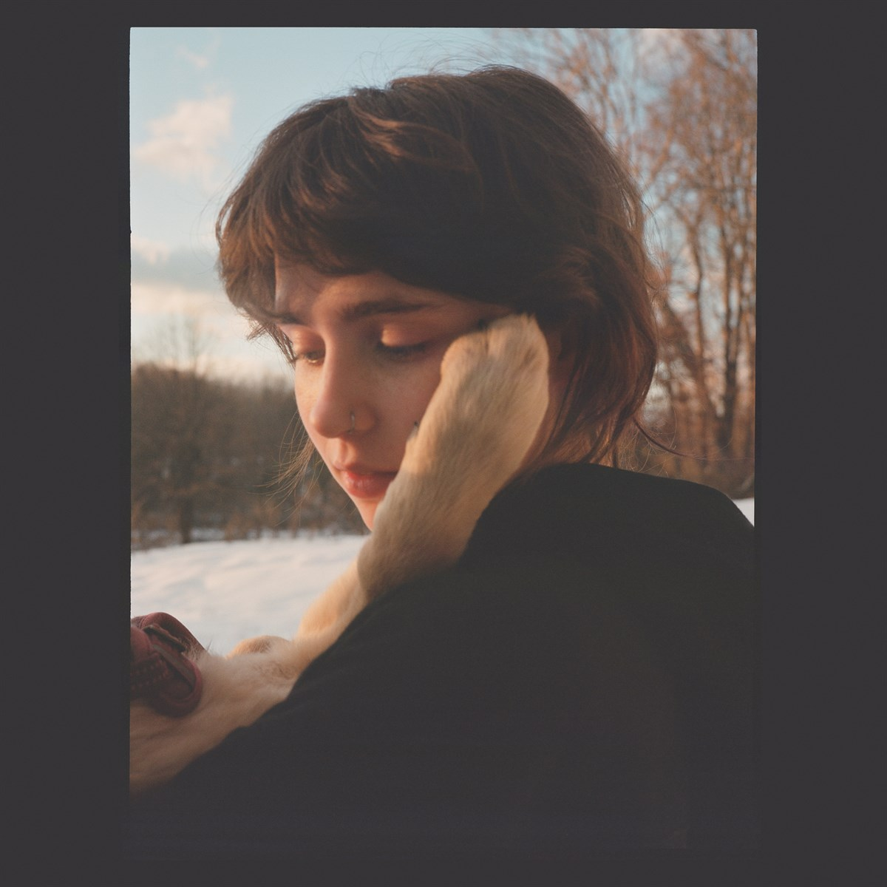

ALBUMES

2019
Immunity

2021
Sling
Claire Elizabeth Cottrill (nacida el 18 de agosto de 1998), más conocida profesionalmente como Clairo, es una cantante y compositora estadounidense que se dio a conocer en 2017 con la canción lo-fi Pretty Girl. Cantante desde los 13, Clairo comenzó su carrera subiendo temas a SoundCloud y YouTube. En 2017 se dio a conocer con el hit Pretty Girl y un año después estrenó su primer trabajo el EP Diary 001. En 2018 salió del closet como bisexual. Su álbum debut de estudio, Immunity, se estrenó en 2019 con los exitosos Bags y Sofia. Sofia se viralizó un año después en tiktok, siendo además su primer sencillo en el Billboard Hot 100. Actualmente es vocalista de la banda Shelly, la banda que fundo en octubre del 2020 en colaboración con sus amigos artistas Josh Mehling, Noa Frances y el cantante indie Claud.
Immunity
Sling
680,564,697
270,825,730
460,252,586
Hija del ejecutivo de marketing Geoff Cottrill, Clario nació en Atlanta, Georgia, pero se crio en Carlisle, Massachusetts. Desde muy pequeña se sintió interesada por la música. A los 13 años comenzó a componer y subir sus canciones a SoundCloud. Sus primeras grabaciones en la plataforma fueron covers y algunos temas de su autoría. Pronto construyo una base de fans lo que le facilito su entrada a la escena musical. Actualmente en su cuenta pueden encontrarse covers de The Cure, Sean Nicolas Savage, Fugazi y Ariel Pink, así como temas originales, entre los cuales se destacan dreams, bubble gum, dark room y rec_396. A los 17 años fue diagnosticada con artritis reumatoide juvenil. Según comentó la misma artista, durante su adolescencia sufrió de problemas relacionados con la baja autoestima.
Clairo llamó la atención por primera vez a finales de 2017 con su sencillo Pretty Girl, que se volvió viral en YouTube. La canción de estilo lo-fi se hizo popular en la plataforma, extendiéndose luego en redes y atrayendo la atención del publico joven. Casi al mismo tiempo apareció Flamin Hot Cheetos, tema que gran numero gran popularidad, obteniendo más de 3 millones de vistas para julio de 2018. Gracias al éxito de Pretty Girl, la artista firmó contrato en poco tiempo con The Fader, sello con el haría su debut meses después. El 25 de mayo de 2018, Clairo lanzó su EP debut Diary 001, un trabajo de seis canciones que contó con la participación del artista Rejjie Snow. El EP incluyo los ya conocidos Pretty Girl y Flamin Hot Cheetos, junto a los temas 4FEVER, Hello? y B.O.M.D. A continuación, realizó su primera gira por América del Norte, actuando también en varios festivales. En octubre, se presentó en Lollapalooza y en 2019, participó en Coachella. Su primer álbum de estudio, Inmunity, llegó en agosto de 2019, con los sencillos Bags, Closer To You y Sofia. El álbum contó con un total de 11 canciones y fue todo un éxito en las plataformas digitales. Además de Sofia, Inmunity incluía temas como Alewife, North, White Flag y Feel Something. Tras el lanzamiento del álbum tuvo presentaciones en Jimmy Kimmel Live! y The Ellen DeGeneres Show. Además, recibió el premio al Artista pop del año en los Boston Music Awards y se llevó un premio al álbum del año por Inmunity. También en 2019, colaboró con Wallows (la banda de Dylan Minnette), en el sencillo Are You Bored Yet? y en el EDM con Mura Masa I Don’t Think I Can Do This Again. Si bien Clairo era conocida, la fama le llegó en 2020 luego de que Sofia se viralizara en TikTok. Fue entonces que la canción escaló al Billboard Hot 100, convirtiéndose en su primer sencillo en la lista.
En octubre de 2020, formó la banda Shelly, junto a sus amigos los artistas Josh Mehling, Noa Frances y el cantante indie Claud. Shelly debutó con los sencillos Steeeam y Natural, el 30 del mismo mes. Actualmente se encuentra trabajando en su segundo álbum de estudio. Sus más recientes lanzamientos han sido en SoundCloud.
La artista fue criticada por varios usuarios en redes, señalada de nepotismo, pues según estos su carrera tomo impulso gracias a las influencias de su padre. Todos los señalamientos fueron negados por la artista, quien además tildo de sexistas a los críticos en redes. En 2018 salió del closet como bisexual.